class: center, middle .left-column[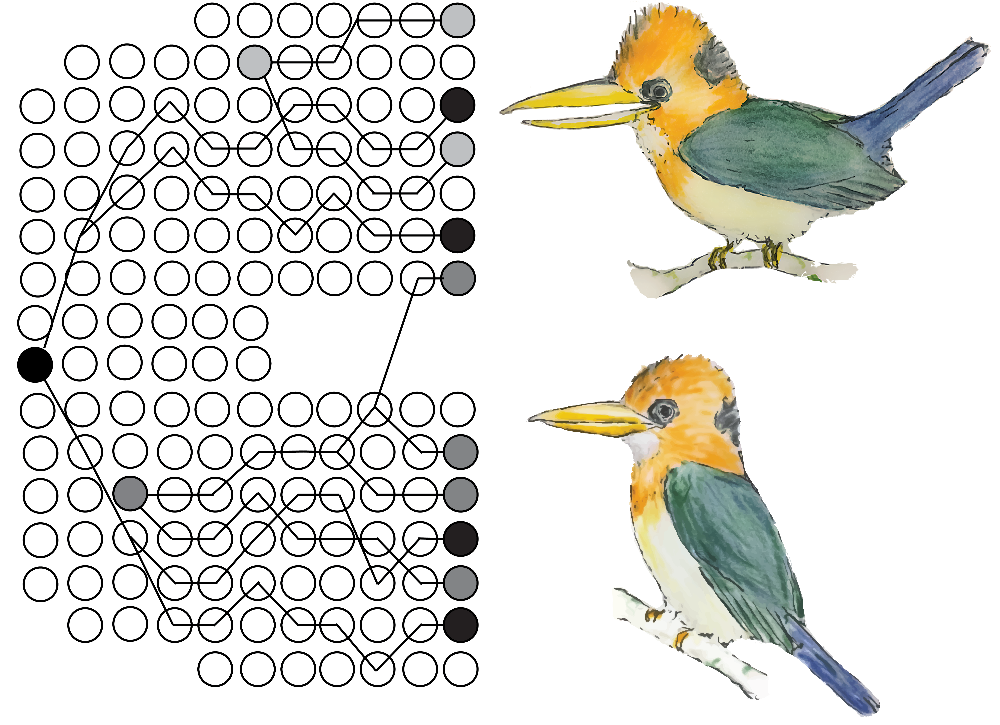 ] .right-column[ .title[Ecological speciation across an elevational gradient in New Guinea kingfishers?] .author[Ethan Linck<sup>1</sup>,] .coauthor[Ben Freeman<sup>2</sup>, Jack Dumbacher<sup>3</sup>, John Klicka<sup>1</sup>] .institution[*<sup>1</sup>University of Washington, <sup>2</sup>University of British Columbia, <sup>3</sup>California Academy of Sciences*] .center[<img style="width:7%" src="../figures/twitter-512.png"> @ethanblinck] <h3>#AOS18AZ</h3> ] ??? Hi everyone, and thanks so much for coming. Today I'm going to be presenting some new results from my dissertation work on speciation in a pair of forest kingfishers from New Guinea. --- class: center ## Adaptation and speciation -- .left-column2[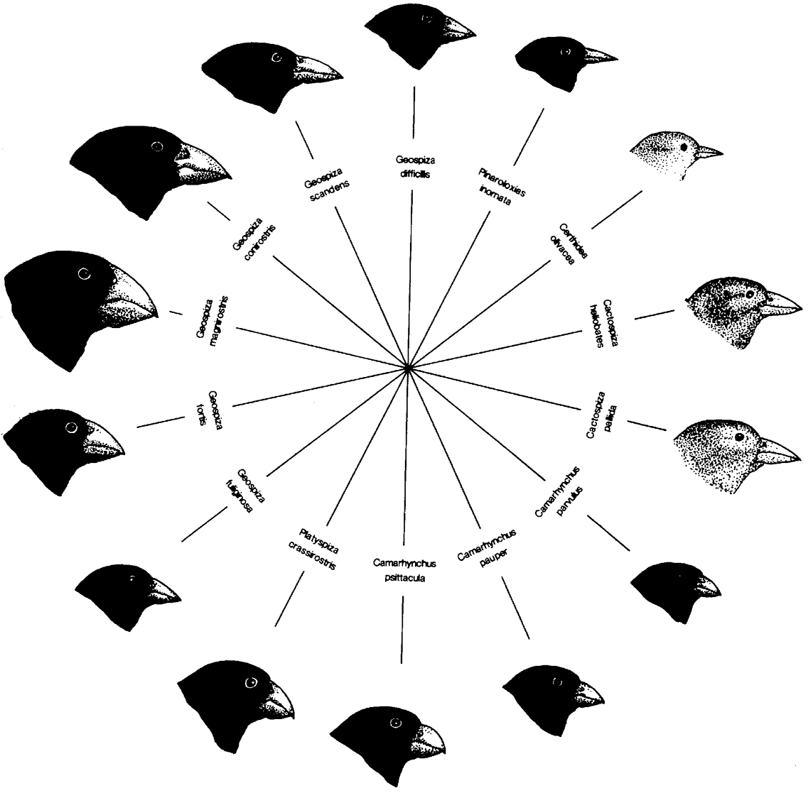] .right-column2[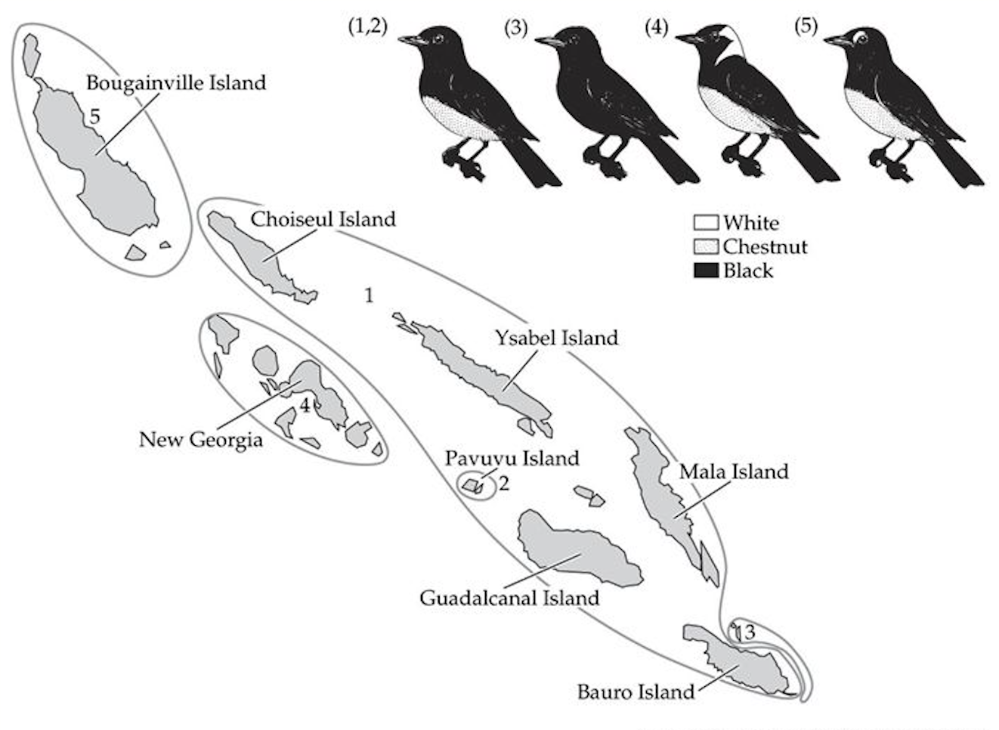 Price 2007, Lomolino et al. 2005] ??? If you were to ask a random high school student to give you an example of how one species becomes two in nature, there's a pretty good chance they'd mention Geospiza finches in the Galopagos. Because the field gave us this canonical example of speciation driven by natural selection, budding ornithologists are often surprised to learn it's widely considered the exception to the rule, and that we think the vast majority of speciation events in birds require a sufficient period of geographic separation for reproductive isolation to develop, with adaptation being more or less important but generally serving more a helper instead of a motor: in the example here, Monarch Flycatchers are diverging in isolation across the Solomon Islands, for instance, canonical in its own right for deeply shaping the ideas of Ernst Mayr. I've always found this tension interesting, especially when I talk to biologists who work in other systems where speciation by natural selection is assumed to be more common -- what I'll be loosely referring to as ecological speciation for the rest of the talk. And while data on species distributions and the comparative phylogenetic method has largely supported the primacy of allopatric speciation, the advent of genome-wide DNA sequencing has complicated a formerly clean picture -- we now know divergence with some degree of gene flow is likely to have occured in many groups, regardless of the geographic arrangement of populations, implicating a prominent role for selection. Using these new methods to test for ecological speciation in likely candidates for the process is important not just because finding new examples would be cool, but also because not finding them can help shed light on its scarcity in birds, and maybe something more fundamental about genetic constrraints on speciation across systems. --- class: center ## Tropical montane biodiversity -- .center[ 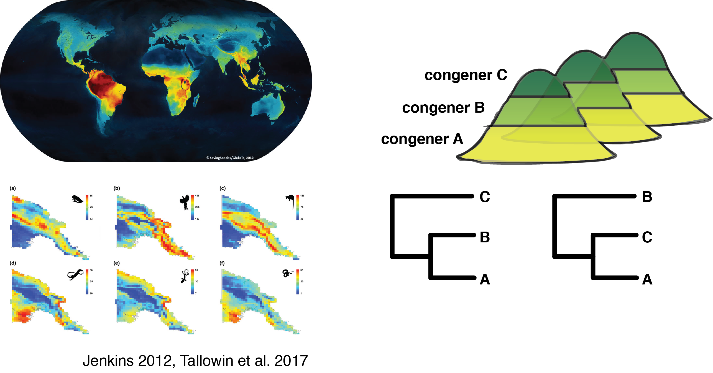] ??? A natural place to look for cases of ecological speciation in birds are tropical montane regions. This is partly because of their incredible species richness -- in the figure on the left you can see that the hottest global biodiversity hotspots are on the slopes of tropical mountains, a pattern recapitulated at small scales below on the island of New Guinea across vertebrate groups -- but also because they provide an environmental gradient capable of generating divergent natural selection. The fact that many bird groups in the tropics show a distributional pattern where congeners with narrow elevational ranges replace each other as you go up plot is potentially consistent with speciation across an elevational range because of this selection, assuming parapatric taxa are each sister to one another. This is an intuitive and widely cited idea, but poorly supported by empirical examples. --- class: center ## Evolution of elevational series -- .center[ 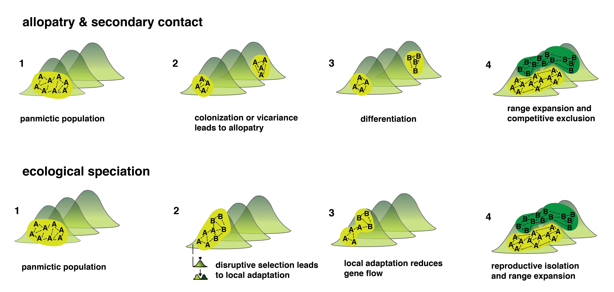] ??? Part of the problem is that where we *do* have sister elevational replacements, we still have a null hypothesis of allopatric speciation followed by secondary contact and range displacement. Eliminating this possibility in favor of an ecological speciation model where local adaptation reduces gene flow between populations at different elevations requires a higher standard of evidence. --- class: center ## *Syma* kingfishers -- .center[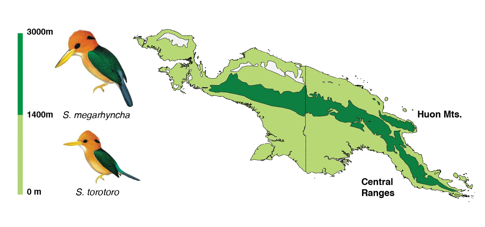] ??? In other nonmodel systems where experimental tests of speciation mechanisms are intractable, the best evidence for ecological speciation comes from observing the process in parallel, because if it has occurred on the same environmental gradient more than once it suggests a strong link between a source of selection and the evolution of reproductive isolation. In stickleback fish, for example, we see the benthic and limnetic species pairs evolve repeatedly in isolated glacial lakes. In tropical mountain birds, the island of New Guinea provides a rough analog in giving us replicated high mountain ranges that have been isolated since uplift -- two of the most important of which are pictured here, the Central Ranges and the mountains of the Huon Peninsula. New Guinea's avifauna is also rich with elevational replacements. Of these, the two forest kingfisher species in the genus Syma are good candidates for study for a few reasons. First, they are to the best of our knowledge sister taxa. Second, high elevation species appears to be larger than the low elevation species, which is tentatively consistent with Bergman's rule and adaptation to colder climates. Third, its call is reportedly lower in frequency as well, which is both a possible mechanism for reproductive isolation and could be influenced by either body size or direct selection on signal transmission related to differences in vegetation structure across elevation. This is important because the theoretical models of ecological speciation that are easiest to attain invoke so-called "magic traits", where environmentally mediated selection acts on the same trait that causes reproductive isolation. --- class: center ## Predictions: phenotype -- .center[ 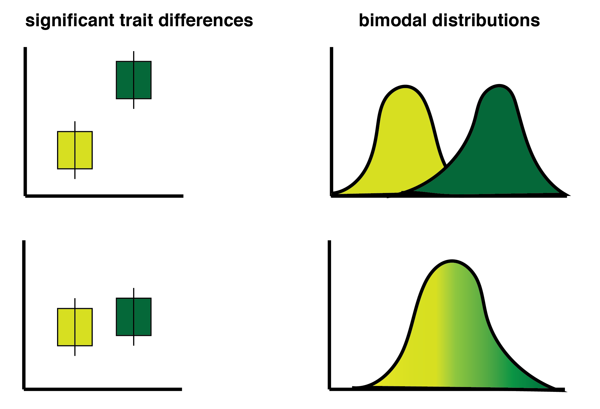] ??? If ecological speciation *is* occuring in this system, we would expect to see a set of patterns in phenotype, in the phylogenetic relationships among populations, and in the genetic characteristics of populations themselves. First, we want to be sure that reported differences in size are song are indeed valid -- in the field, these species are essentially identified only by the elevational range they are encountered at, and our knowledge of variation in New Guinea birds is poor in general. Second, we want to be sure these differences are bimodal and not clinal, as this bimodal trait distributions would be eveidence of assortative mating and suggest there are indeed two species. --- class: center ## Predictions: phylogeny -- .center[ 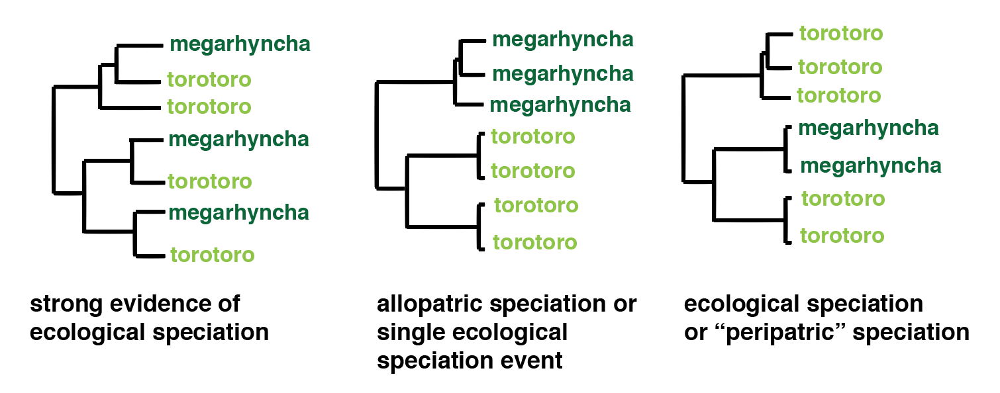] ??? As we discussed earlier, phylogenetics alone cannot eliminate all hypotheses of speciation mechanisms. But if we were to discover populations of the Mountain Kingfisher in those two replicate mountain ranges I mentioned were in fact not each other's closest relatives, that would strongly supported ecological speciation as the most parsimonious model. If all populations of megarhyncha and torotoro are reciprocally monophyletic, however, we can't necessarily rule out ecological speciation, as it may have occured a single time across a single slope and been followed by range expansion. Alternatively, finding megarhyncha is nested within a set of cryptic torotoro species would be interesting, but again could be consistent with several models of divergence. --- class: center ## Predictions: population genomics -- .center[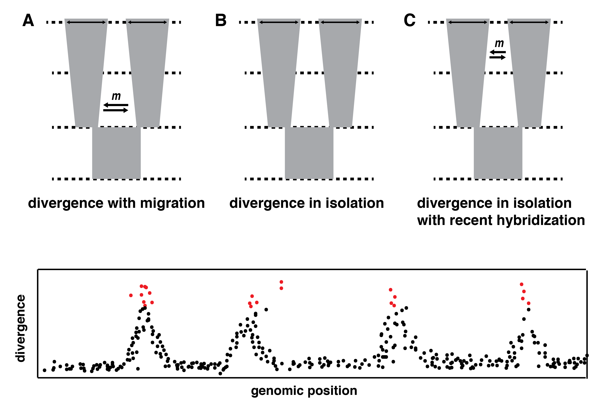] ??? To try and winnow down these possibilities, we can draw on population genetic theory. By modeling the speciation process and comparing patterns in our observed genetic data to expectations under ecological speciation, speciation in isolation, or speciation in isolation followed by a period of hybridization, and see which fits best. A final source of relevant data are patterns of genome-wide divergence between populations -- finding so-called "islands" of higher divergence may be consistent with the signal of natural selection on certain traits despite the homogenizing influence of gene flow, as long as we use the proper methods to eliminate the possibility of reduced recombination in these regions instead. --- class: center ## Methods and sampling -- .center[<img style="width:100%" src="../figures/sampling.png">] ??? We therefore collected multiple types of data on the Moutain and Yellow-billed kingfisher across the island of New Guinea. First, we took a set of standard morphological measurements of all available Moutnain Kingfishers and 60 Yellow-billed Kingfisher specimens at the American Museum, and aggregated all available recordings of vocalizations. We next sampled DNA from the toepads of many of the same study skins. For about half of these we conducted low-coverage whole genome sequencing, and for the rest used a reduced-representation sequencing method around restriction digest cutsites. --- class: center ## Results: phenotype -- .center2[ 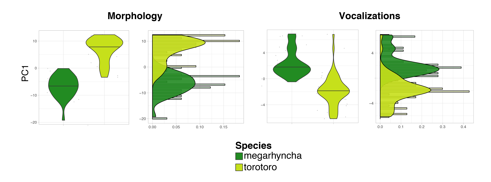] ??? Encouragingly, we found that the Mountain and Yellow-billed kingfisher are indeed different in size, and that the differences seem to be bimodal. Not all the traits we measured showed the same pattern -- potentially suggesting selection acting on some and not others -- but the first principal component of these different measures is consistent with a two species model. --- class: center ## Results: phylogeny -- .center[ 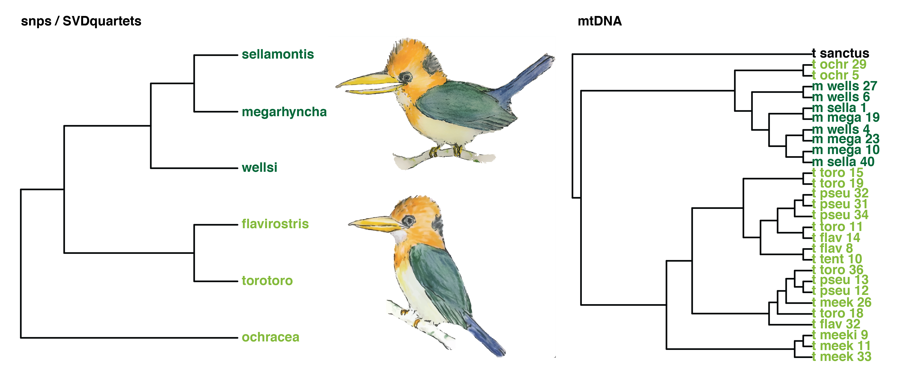] ??? Estimating a species tree of phylogenetic relationships among populations, however, we found reciprocal monophyly between yellow-billed and mountain kinfishers -- in other words, we lack a smoking gun. This pattern was largely recapitulated using full mitochondrial genomes, although there's a wrinkle -- which is that the subspecies I have labeled here as "ochracea" is alternatively sister to megarhycnha or sister to torotoro. This is interesting because "ochracea" is the sole insular population of torotoro, and just as large as the mountain kingfisher. But that's fodder for a future talk... --- class: center ## Results: population genomics -- .center[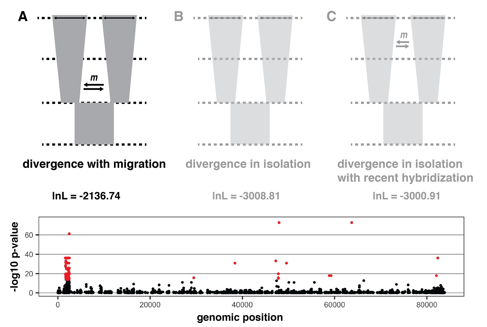] ??? Despite the fact that phylogeny can't tell us much here, demographic inference strongly supported a model of divergence with gene flow over either divergence in isolation or divergence in isolation followed by secondary hybridization, a result that proved robust to a number of different genome subsampling schemes. As with any simplification, there are plenty of caveats here, but it implicates a role for selection between species in driving divergence. I'd like to say that this was further corroborated by our genome-wide scans for divergence, but the fact is the data just isn't in the right place let -- we lack an appropriate reference genome, and so the plot below is likely both heavily influenced by assembly artifacts and represents only a small percentage of the data we hope to bring to bear on the question. As it stands, there's at least one obvious island, but I suspect that's located on the Z chromosome, which shows elevated divergence both because of reduced effective population size and potentially because of assembly errors when reads from the W chromosome are aligned to it. --- class: center ## Conclusions -- .center[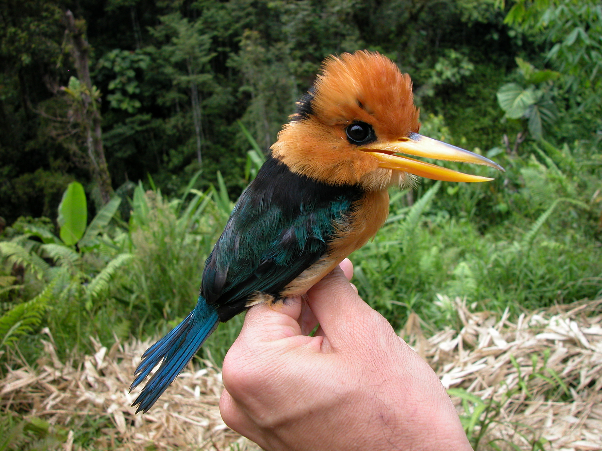] ??? So what to make of all this? I put a question mark on the title of this talk and I'm glad that Betteridge's Law of Headlines doesn't apply here -- we only got our WGS data two weeks ago and there's a lot we need to do, but I think our initial results continue to be consistent with an ecological speciation model. I'm hopeful that by continuing to interrogate our genomic data we'll reduce the margin of uncertainty here, but because of the difficulty of observing these species in the wild we may never be able to identify the exact cause of reproductive isolation. --- class: center ## Next steps -- .center[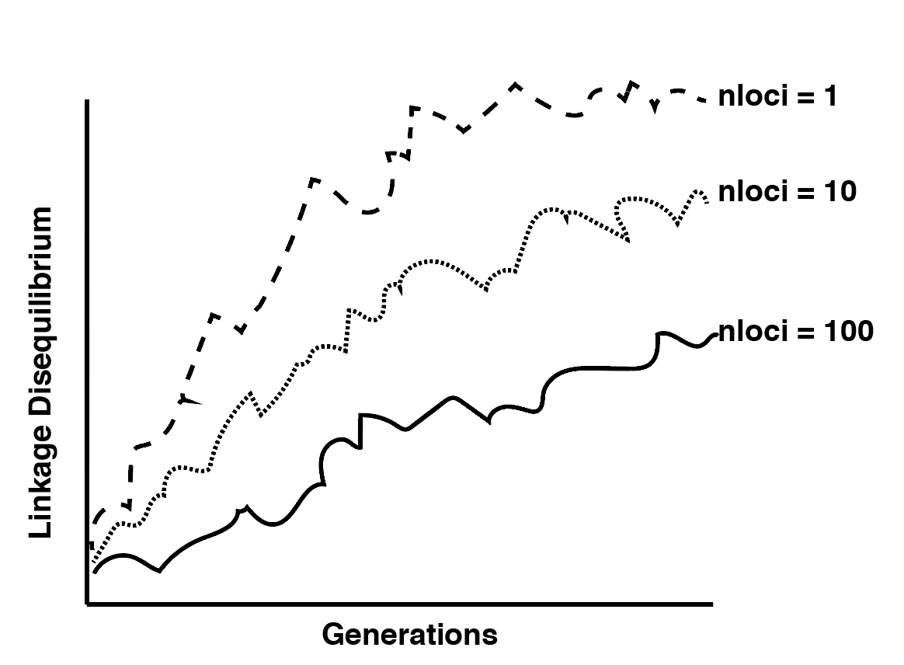] ??? Whatever our eventual conclusion, I think the results of our work will shed light on speciation processes in birds and in nature more broadly. Size differences between megarhyncha and torotoro are almost certainly involves thousands of SNPs throughout the genome, for instance, and implementing simulations to understand how the difficulty of evolving reproductive isolation either increases or decreases when selection acts on highly polygenic traits might shed light on when we might expect ecological speciation and when we wouldn't. --- class: center ## Acknowledgements -- .center[] ??? And with that I'd like to thank my funding agencies and my supporting institutions. I'd also like to acknowledge Alex Weibe, a Cornell undergraduate who helped collect our morphological data, and my labmate CJ for help with dealing with the overwhelming size of WGS data. Finally, I'd like to acknowledge that the historic samples in this study are an unavoidable artifact of scientific colonialism and were collected with the aid of countless unnamed New Guinean landowners. There's not currently the appropriate infrastructure in Papua New Guinea or West Papua for this sort of work to be done there, but supporting institutions like the PNG Insititute of Biological Research is an important step in making the production and distribution of scientific knowledge more equitable. --- class: center ## #nerdsofafeather -- .center[ <img style="width:75%" src="../figures/hcnxaos-01.png">] ??? I'd also like to quickly promote a happy hour I'm helping host with the magazine High Country News to connect AOS people with Tucson area writers, so if you're interested in science writing, please come on by!